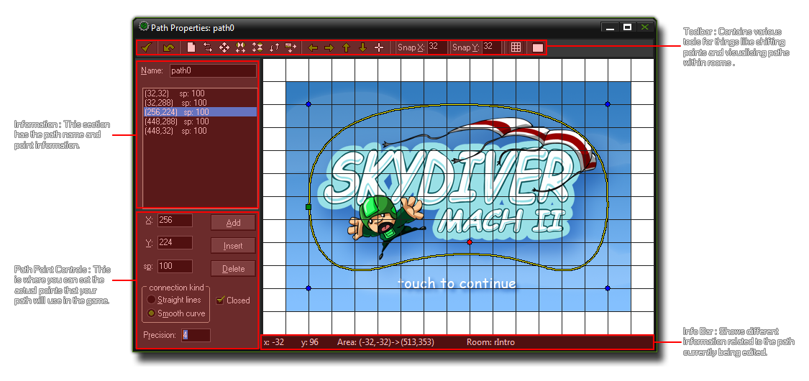

Paths 路径
这一章讲述了如何使用 GameMaker:Studio 的路径编辑器。
This section deals with the GameMaker:Studio path editor.
有些时候你的游戏中需要让一些对象按照特定路径移动穿过整个关卡。一般说来只需要简单的创建一个包含了房间中一些位置坐标的数组然后让你的实例在这些位置之间运动即可。但是创建这个数组是一件繁琐的操作，并且难以进行修改、测试和应用在不同实例上。为此， GameMaker:Studio 提供了 路径 资源以及一个专门设计的路径编辑器。
路径的基本理念非常简单——通过在路径编辑器中绘制一条路径，你就可以在一个对象的创建事件中添加一个动作（或者用代码）来让这个对象沿着某个特定路劲运动。同时你也可以设置沿路径运动时的速度，以及在运动到不同位置及方向时执行不同的动作。让我们从认识路径编辑器开始了解路径。
注意 : 如果你在使用 GameMaker:Studio 免费版 你每个游戏只能最多创建10个路径。更多细节参见 这里。
At some point while creating your games you will need one of your objects to follow a path through a level. Now, this can be done by simply creating an array of positions within the room and then having an instance
move between them, but that can be a chore to set up and is difficult to change, test and adapt for different instance. For this reason GameMaker:Studio has path resources and a dedicated
path editor.
The basic idea is rather simple - you define a path by drawing it in the path editor, then you can place an action (or code) in the creation event of an object to tell the object to follow that particular path. You can also set
the speed to follow the path and a number of other actions relating to the position and orientation of the path within the room. Let's start by looking at the path editor and how that works.
NOTE : If you are using the Free version of GameMaker:Studio you are limited to a maximum of 10 paths per game. For more details see
here.
Defining paths 定义路径
要在游戏中创建新的路径，只需要点击 Resources 菜单中的 Create Path 选项（或者 右击 路径资源然后选择 Create Path），在接下来的窗口中你可以创建一个新路径（下图中已经创建了一条路径）：
To create a new path resource in your game, choose Create Path from the Resources menu (or right click on the path resource and select Create Path), which will open the following window where you can create a new path (the image shows a path already created) :  如你所见，占了路径编辑器绝大部分的是展示你绘制的路径的可视化界面，但是在编辑器边缘还有许多的按钮、选项卡和信息栏，这些工具帮你完成路径的创建和修改。
As you can see, most of the path editor is taken up with the a visual representation of the space your path is drawn in, but around the edges there are a number of buttons, tabs and information bars that are there to help
you in the task of creating and changing the paths you make.
Path Information 路径信息
就和其它资源一样，每个路径资源你都需要指定一个独一无二的名称 ，因为在接下来的过程中你需要用这个名称来识别这个资源，并且在一个好的系统中人们通常使用前缀（或者后缀）来在区别不同类型的资源（如 path_Enemy_1 或者 PowerUp_path），这样在代码或者动作中才好区分这些资源。 当你给路径起好名字后，你就可以可以通过往右侧的窗口中放置点来定义这个路径了。这只需要简单的在你想让你的路径通过的位置上点击鼠标左键即可。 同时，路径的起点会用绿色的方块标出，当前的路径点用红色的点表示，而蓝色的点代表的是一个普通的路径点（路径本身是一条黄色的线）。你可以点击任何一个路径点然后拖动鼠标来改变这个点的位置，不过要注意的是绿色的路径起点是不能直接在这里改变位置的，它会根据你的路径是否平滑而自动改变它的位置。这些路径点会被自动添加进位于路径名下方的路径点列表，并且你可以在这里点击以选择相应的点。
As with all resources in GameMaker:Studio you should give your new path a unique name as this is what will be used to identify it throughout the game you are making, and a good system that a lot of people
use is to prefix (or suffix) the resource for easy recognition in code or actions (eg: path_Enemy_1 or PowerUp_path). Once you have named the path, you can start to define it by placing points in the
main window on the right. This is simply done by clicking the left mouse button on a point where you want the path to pass through, with a green square signifying the start of the path, a red dot being the
current path point, and a blue dot being a normal path point (the path itself is drawn as a yellow line). You can click any point of a path and then drag the mouse to move it around in the editor, although be aware that
the green path start position is not directly selectable as it changes position automatically depending on whether the path is smooth or not (more on this further down). These points are added automatically to the
point list beneath the path name and you can also click on a point in the list to select it in the main window.
Path Toolbar 路径工具栏
在窗口顶端的是路径工具栏，上面有数个不同功能的按钮：
At the top of the path editor you can find the tool bar which has a number of buttons that refer to actions in the path editor : 
- 确认 : 点击这个按钮会保存当前路径设置并且关闭路径编辑器。注意点击这个按钮会导致路径直接被保存，并不会提示你任何关于路径是否被修改。而如果你点击关闭按钮，编辑器会提示你路径是否被修改过。
- 撤销 : 这个按钮功能很简单，撤销一次操作。一次操作的含义是只有最后一次的改动会被撤销。
- 路径点操作 : 这些按钮都会对路径点进行某种修改，让你可以彻底删除这个路径点，对路径点进行镜像操作或者移动路径点。
- 路径视图操作 : 你可以用这些按钮来改变右侧的路径视图（有些时候路径可能比左侧的可视化区域还要大）。
- 路径编辑器操作 : 这里你可以改变路径网格点的分辨率，也可以隐藏或者显示网格点。最后一个按钮可以让你选择一个房间的背景显示在可视化区域中，这个可以让你更好的把握路径在房间中的效果。
- Confirm : Clicking this button will close the path editor and save any changes you have made. Beware, as this will not warn you that the path has changed, as clicking the close button would do, but will just save directly any changes you have made.
- Undo : This is a simple, one level, undo button. By one level, we mean that only the last action performed will be undone.
- Path Point Actions : These buttons all change the path points in some way, giving you the ability to clear them completely, mirror them and shift them.
- Path View Actions : You can use these to pan the view of the path around (as the path may be bigger than the visible area in the editor). Note that you can also click and
- Path Editor Actions : Here you can select the snap resolution for the path points, as well as toggle the grid visibility on or off. The last button permits you to select a room to be drawn as a background which can be very useful for giving you a "feel" for how the path will work in any given game room.
Path Point Control 路径点控制
你可以用 Add 按钮来向路径中添加路径点，这个新的路径点的位置会和你添加的最后一个路径点重合（或者如果当前路径中没有路径点，那么这个新的点就会成为起始路径点）。随后你可以通过点击这个点并且拖动它来移动这个路径点（你也可以对路径上的其它点这么做），或者你可以修改左侧标有 X 和 Y的 输入框的值来改变点的位置。通过改变 Sp 输入框里的值，你可以给这个点设置一个速度（默认值是100）。这个速度值实际上是个百分比，当实例经过这个点时速度会按照这个百分比改变。如果你的实例沿路径运动时的初始速度是2（2像素每步），然后其中一个路径点的 Sp 值为50，那么在实例运动经过这个路径点时，它的速度会减小为1（当前速度的50%）。同样的，你可以将 Sp 值设置为105，那么这会让实例的运动速度变快。用这种方法你可以创建不少看上去很棒的动态运动，并且不需要写一行代码！
在 Add 按钮下方的是 Insert 和 Delete 按钮。如果你选中路径上的一个路径点（不管你是直接点击这个点还是在路径点列表中选中的这个点），然后点击 Insert 按钮，那么一个新的点将被插入到你选中的那个点的同一位置上。然后你可以拖动这个新插入的点到你想要的位置上去。如果你点击的是 Delete 按钮，你选中的那个点将被从路径中删除（如果你不小心删错了，你可以使用之前提到的 撤销 按钮）。
最后，你可以指定路径的连接方式以及路径是否需要闭合（一条闭合的路径会将路径的起始点和结束点连接起来）。连接方式可以是线段或者是平滑。如果设置为线段方式，那么路径只是简单的用直线依次连接每一个点，路径的方向只在每个连接点处才会改变；而如果使用平滑方式，那么系统会根据你的点创建一条更加平滑的曲线路径。同时你可以设置曲线的平滑程度（默认是4），范围是1至8，其中8最为平滑。如下的图片展示了一些不同设置的路径的样例：
You can add points to the path using the Add button, which will add a new point to the path, but at the same position as the previous path point created (or at the path start position if none have
been created yet). these points can then be moved by clicking and dragging on them (as can all points on the path), or by changing the values presented to you on the left for the X and Y position.
You can also set a speed for individual path points by changing the value in the Sp box (default value is 100). The speed value is actually a percentage of the speed at which you make the instance
move along the path, so if you start an instance at a speed of 2 (2 pixels per step) along a path and then one of the path points has a Sp value of 50, the instance will reduce speed as it approaches this point
to a speed of 1 (50% of the path speed). Equally, you can set the Sp to 150% and the instance will accelerate as it reaches the point. In this way you can create some nice dynamic-looking movement without
any code whatsoever!
Beneath the Add button you have Insert and Delete buttons too. If you select a point on your path (either by clicking on it in the editor or by clicking the point list on the left of the editor) and then click on
Insert, a new point will be "inserted" into the path at the same position. You can then drag this point to get it to the position you wish. If you click on the Delete button, the point selected will be removed from the
path (there is an undo button at the top of the screen should you make a mistake).
Finally, you can specify the connection kind and whether the path should be closed or not (a closed path will connect the last point on the path with the first). The connection kind can be either straight line,
or smooth where a straight line connect simply connects the points of a path in a linear basis, with angular changes at each point, while a smooth connection will create a much softer path that may not pass directly
through any of the points, but rather take an approximate line, creating nice curves. You can also specify the precision for the curves (default is 4) which can be from 1 to 8 with 8 being the smoothest. The image below shows
an example of how these options affect the path :

Info Bar 信息栏
底部的信息栏显示了鼠标在编辑器中的x y坐标，以及可视范围的坐标。路径编辑器有一个中心点（0，0），并且它的坐标系统是和房间编辑器相同的，也就是说向下y坐标递增，向上y坐标递减，向右x坐标递增，向左x坐标递减。这样你就可以根据这些坐标来绘制你的路径。这也意味着你在设计路径时搞清楚当前究竟位于什么位置很有必要，而这可以通过观察 Area 值来了解——第一对坐标表示了当前视角左上角的坐标，而第二对坐标表示右下角的坐标。
This bar at the bottom shows the x and y coordinates of the mouse in the path editor, as well as the area of the room visible in the path editor window. The path editor has a center point (0,0) and it's coordinate system works
the same as for the room editor, in that down is +y, up is -y, right is +x and left is -x, and in this way you can plot your path around these coordinates. This means that it can be useful to know what part of this area you are looking
at while designing your path and this is shown by the Area values, with the first set of coordinates being the upper left corner of the current view, and the second set of coordinates being the lower right corner.
Assigning A Path To An Object 在对象上绑定一个路径
要在一个对象的实例上绑定一个路径，你可以使用路径动作（ 动作 - 运动 章节有详细介绍），或者可以使用代码来完成。当你使用脚本或者一小段代码片段时，你对于路径是如何工作的可以有更多的选择，同时我们有不少现成的函数来完成一些基础的路径动作，比如沿路径运动（参见 代码参考 - 路径），以及更加复杂的函数，比如在游戏中修改一个路径上的路径点（参见 代码参考 - 改变路径）。
To assign a path to an instance of an object, you can use the path actions (covered in the section Actions - Move Actions) or you can use code.
When using scripts or pieces of code you have more control over the way the path is executed, and there are a variety of functions that cover basic actions like starting the path (see
Reference - Paths), and more complex actions like modifying and changing path points from within the game (see
Reference - Changing Paths).
-noisyfox-